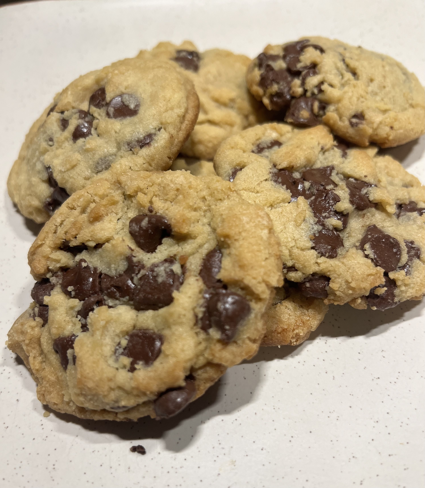

Chocolate Chip Cookies

I. Ingredients:
- 293g All-Purpose Flour
- 3/4 tsp Baking Soda
- 1 tsp Kosher Salt
- 1 tsp Cinnamon
- 1/4 tsp Nutmeg
- 100g Granulated Sugar
- 190g Dark Brown Sugar
- 197g Unsalted Butter
- 1 Large Egg
- 2 tsp of Vanilla Extract
- 8oz Semi-Sweet Chocolate Chips
II. Cooking Instructions
- Gently melt the butter in a saucepan over low heat. Set aside to cool slightly.
- In a small mixing bowl, mix together flour, baking soda, salt, cinnamon, and nutmeg.
- In a medium mixing bowl, whisk together the brown and granulated sugars. Pour in the melted butter and stir just until combined. Whisk in the egg and vanilla until the mixture is smooth and creamy, then whisk vigorously until it lightens in color
- Using a rubber spatula, fold the flour mixture into the wet ingredients, just until a few streaks of flour remain. Dump in the chocolate and continue folding until the chunks are evenly dispersed.
- Measure out about 2.5 tablespoons for each cookie, or use a 1.5-ounce cookie scoop, to form about 18 dough balls. Chill the dough balls, uncovered, in the refrigerator for 2 hours.
- When the cookies are almost done chilling, preheat the oven to 350°F and place the oven racks in the top and bottom thirds of the oven. Line two half-sheet trays with parchment paper and place 6 or 7 dough balls on each.
- Bake the cookies for 6 minutes, then take each tray and bang it on the racks or the top of the stove to deflate them. Switch their positions in the oven and continue baking for 4 more minutes, banging them two more times, once after two minutes, and once when you take them out of the oven. The cookies should be crisp and set on the outside, starting to get color on top, and still slightly underdone in the center
- Let cook for 6-7 hours, or until the internal temperature is at 165-180 degrees F.
- Allow the cookies to cool on their trays for 2-3 minutes before transferring them to a wire rack to continue cooling.
- Repeat with the remaining dough balls or store them, covered, in the fridge or freezer to bake later.